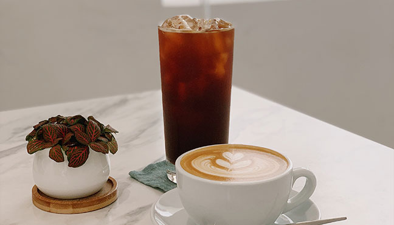
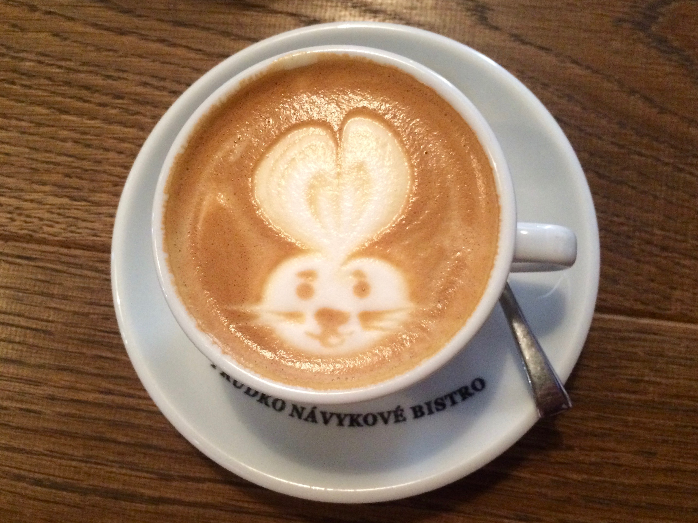

一杯與家人聚在一起喝的咖啡
一杯咖啡，一杯色香味俱全的花式咖啡，需要你用視覺來欣賞，
用嗅覺來聞香，用味覺來品嘗醇美，更需要你用心靈來體會咖啡帶來的
溫馨祥寧靜謐悠遠。心靈，是人除了視、聽、嗅、味、觸之外的，又一感覺
器官——用心靈來感受和體會事物，可以捕捉到視覺、聽覺、嗅覺和觸覺
所不能觸及和感受到的東西。

無農藥種植讓你安心
從食品安全的角度，有機驗證體系要求禽畜糞便要經過堆肥化，
施用禽畜糞田地需經兩期作非食用作物的輪作，才能再繼續耕作有機作物。
所以聯合國農糧組織報告結論，優良的有機農場管理可以降低大腸桿菌
以及微生物毒素對食品的感染。

哥倫比亞原產咖啡豆
哥倫比亞所生產的咖啡豆佔世界第二名約12%，雖然產量不如巴西，
但咖啡豆品質優良且多屬高海拔地區，經濕式的加工處理，
香醇厚實、甘酸滑口、勁道足。有種奇特的地瓜皮風味，
為咖啡中的佳品。常被用來增加其他咖啡的香味，
由於香味豐富，無論是單品飲用或是綜合都非常適值。

資訊
營業時間：12:00pm ~ 08:00pm
地址: 桃園市中壢區健行科技大學對面
電話：01-23456789
